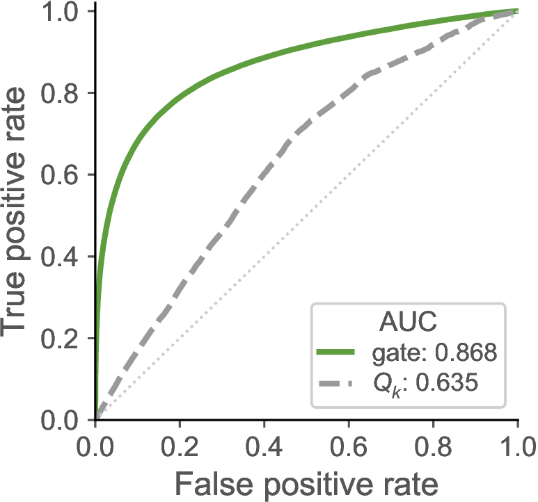
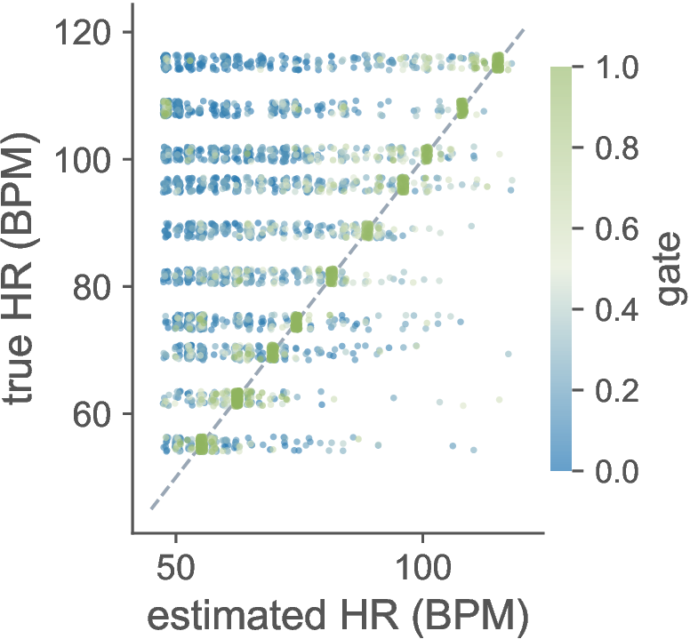
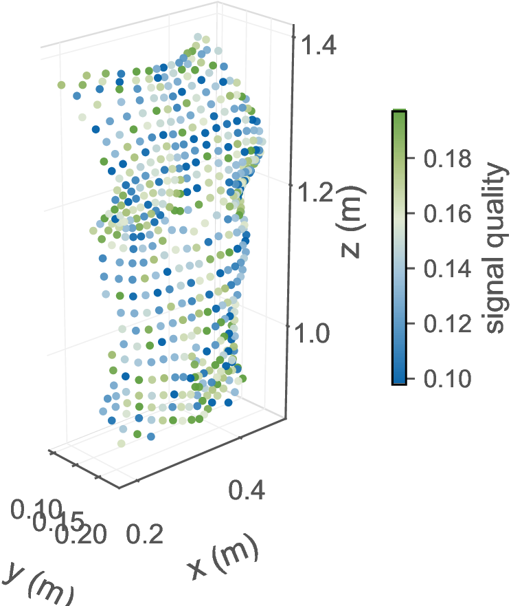
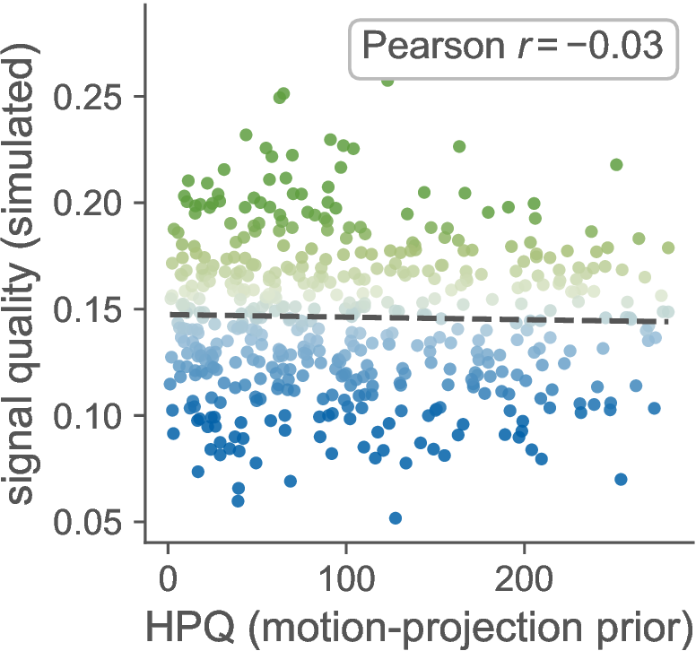
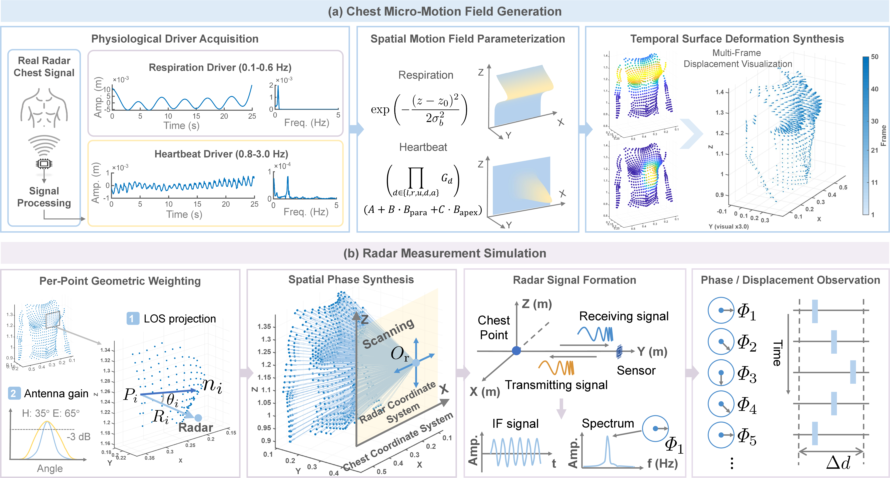
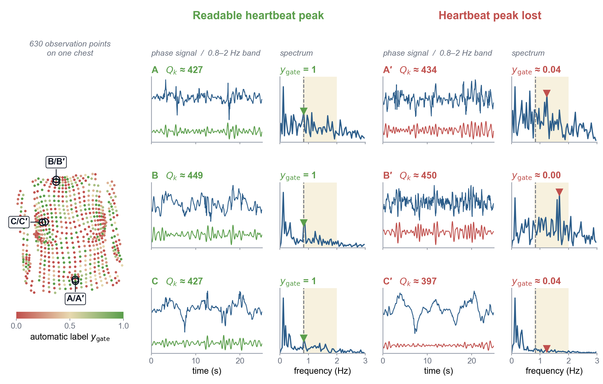
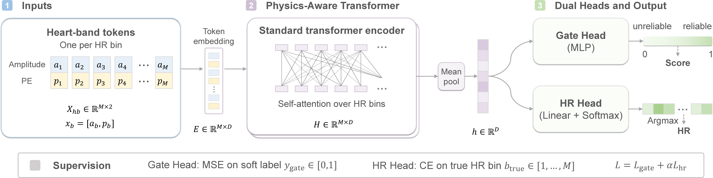
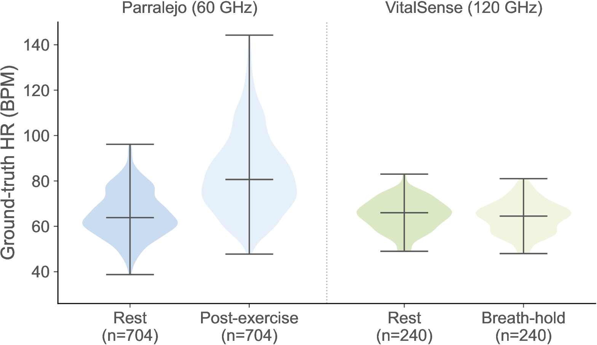
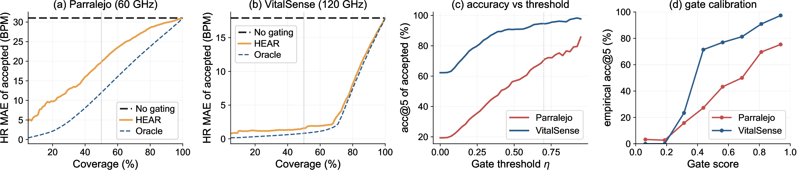
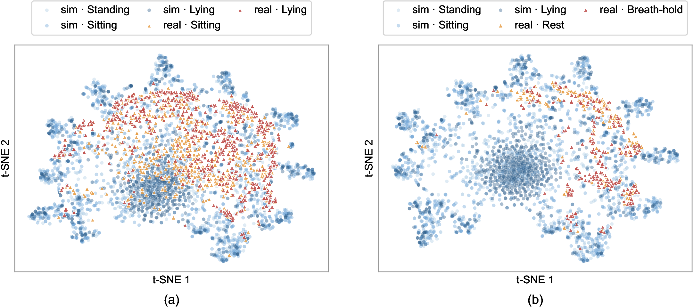

1Nanyang Technological University 2Fudan University ✉ Corresponding authors
Simulated chest-wall motion on SMPL body meshes posed with CMU MoCap motion-capture data via AMASS. Heartbeat displacement is magnified for visibility; respiration and heartbeat are driven by waveforms extracted from real radar recordings.
Male/female × normal/fat body models in the same standing posture, animated by the same respiratory and heartbeat waveforms and shown at a common scale. Each is paired with its chest close-up.
Trained only in simulation, HEAR runs zero-shot on real 60 GHz radar recordings. For each 25 s window it predicts an observability score and a heart rate; windows with g ≥ 0.7 report their estimate (green), and low-score windows abstain (red).
Contactless heart-rate sensing with millimeter-wave (mmWave) radar requires assessing whether individual measurements support reliable estimation. We study learning to assess heartbeat observability, defined as the readability of the heartbeat component in an acquired phase spectrum, for selective heart-rate estimation. Coherent superposition of scatterer returns can suppress this component even under similar macroscopic observation geometry, motivating assessment directly from acquired measurements. To obtain training supervision across different observability conditions, we develop a controllable multi-scatterer frequency-modulated continuous-wave (FMCW) simulator. Agreement between the dominant heartbeat-band peak and the known heart rate provides an automatic observability label for each simulated measurement. We propose HEAR (Heartbeat Estimation with Assessed Reliability), a compact dual-task Transformer that jointly predicts an observability score and heart rate. Trained solely on simulated observations, HEAR transfers zero-shot to two public real-world datasets collected at 60 and 120 GHz from 134 subjects. On the 120 GHz dataset, score-based selection reduces the HR head's mean absolute error from 17.9 BPM at full coverage to 1.6 BPM at 50% coverage. The complete pipeline achieves an end-to-end processing latency of 50.8 ms on an edge device.
Echoes from many chest-wall scatterers superpose coherently within one range bin. Sub-wavelength differences in scatterer ranges set their relative phases, which can preserve or suppress the heartbeat component even when the macroscopic motion projection is identical. Controlled simulation isolates this effect — something physical experiments cannot do, because the same physiological motion cannot be replayed across hundreds of precisely controlled positions.





One body and one physiological drive, observed from 630 candidate points on the chest. Each observation is labeled automatically by comparing its dominant heartbeat-band peak with the known heart rate.


HEAR is trained purely in simulation and evaluated zero-shot on two public datasets: Parralejo (60 GHz FMCW, 110 subjects, lying/sitting × rest/post-exercise, 1,408 windows) Dataset Paper and VitalSense (120 GHz, 24 subjects, rest/breath-hold, 480 windows) Dataset Paper. No window from either dataset is used for training, validation, model selection, or threshold tuning.

| Simulation | Parralejo 60 GHz | VitalSense 120 GHz | |
|---|---|---|---|
| Geometric prior Qk | 0.635 | — | — |
| HEAR gate (zero-shot) | 0.868 | 0.856 | 0.941 |
| Full coverage | At 50% coverage | |
|---|---|---|
| Parralejo 60 GHz | 31.0 BPM | 19.8 BPM |
| VitalSense 120 GHz | 17.9 BPM | 1.6 BPM |
The same gate (threshold g ≥ 0.7) improves the accuracy of five downstream estimators it was never trained with. For the plain FFT peak, Acc@5 BPM rises from 29.8% to 86.7% in simulation, from 32.0% to 65.8% on Parralejo, and from 81.7% to 94.1% on VitalSense; weighted FFT, autocorrelation, harmonic product spectrum, and VMD estimators improve consistently as well.


@article{hu2026hear,
title = {Learning to Assess Heartbeat Observability for
mmWave Heart-Rate Sensing},
author = {Hu, Yuxuan and Shan, Shilin and Yang, Jianfei and Xu, Feng},
journal = {Under review},
year = {2026}
}